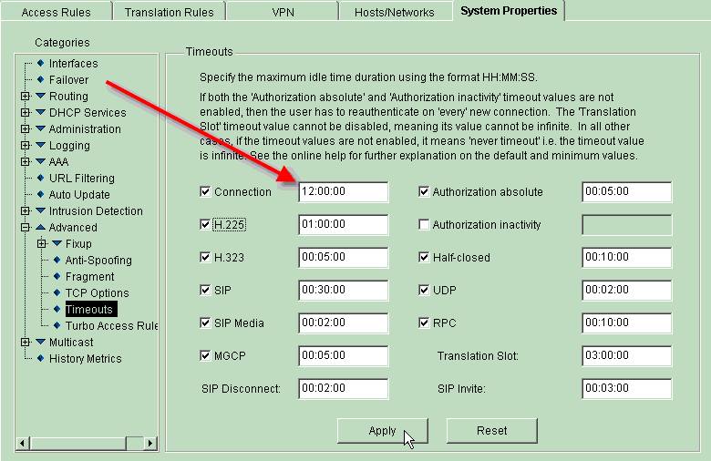

SQL Relay is a persistent database connection pooling, proxying and load balancing system for Unix and Linux supporting ODBC, Oracle, MySQL, PostgreSQL, Sybase, MS SQL Server, IBM DB2, Firebird, SQLite and MS Access (minimally) with APIs for C, C++, Perl, Perl-DBD, Python, Python-DB, Zope, PHP, Ruby, Ruby-DBD, Java and TCL, drop-in replacement libraries for MySQL and PostgreSQL clients, command line clients and extensive documentation. The APIs support advanced database operations such as bind variables, multi-row fetches, client-side result set caching and suspended transactions. It is ideal for speeding up database-driven web-based applications, accessing databases from unsupported platforms, migrating between databases, distributing access to replicated databases and throttling database access.
What can SQL Relay do for me?SQL Relay can improve the efficiency of database-driven web-based applications, provide databases access from unsupported platforms, ease migration between database vendors, distribute access to replicated databases and facilitate throttled database access.
SQL Relay is not exactly a "drop-in" solution though. It requires configuration and possibly programming to be useful.
What platforms does SQL Relay run on?Unix variants. It is known to run on Linux (x86 and PPC), SCO Open Server, Solaris, FreeBSD, OpenBSD and NetBSD. The client API's compile and work on Win32 platforms using Cygwin or UWIN. I only have access to Linux, SCO, Solaris, FreeBSD, OpenBSD, NetBSD and Win32 systems, so from time to time a new release breaks compatibility with other platforms. If there's a platform you'd like to see supported and if you can grant me access to a machine running that platform, send mail to david.muse@firstworks.com.
How does SQL Relay work?SQL Relay's connection daemons log into and maintain sessions with databases. These connection daemons advertise themselves with a listener daemon which listens on an inet and/or unix port for client connections. When a client connects to the listener, if a connection daemon is available, the listener hands off the client to that connection. If no connection daemon is available, the client must wait in queue until one is. Once a client is handed off to a connection daemon, the client communicates to the database through the session maintained by that daemon.
How can SQL Relay improve the efficiency of my website?Here are some examples of how SQL Relay can improve the efficiency of your web site.
Let's say you're running CGI's againt a transactional database such as PostgreSQL, MS SQL Server or Oracle. CGI's have to log into and out of the database each time they run. If you use SQL Relay to maintain persistent connections to the database and just log into and out of SQL Relay, you can reduce the amount of time wasted establishing database connections and handle more CGI requests per-second. This is both because the time-cost of connecting to SQL Relay is smaller than the time-cost of connecting to a transactional database, and because the SQL Relay client library is smaller than most database client libraries, resulting in a more lightweight CGI.
Let's say you're using Apache, PHP and Oracle and you determine by doing all sorts of analysis that you need to keep 30 Apache processes running to provide adequate response. Since most of your site isn't database-driven, on average, no more than 5 PHP's actually access the database simultaneously. Currently, you're using persistent connections to defeat the time-cost of logging into Oracle, but you have to maintain 30 connections (1 per web server process) which takes up a lot of memory on both the web server and database server and you really only need 5 connections. By using SQL Relay you can reduce the number of Oracle connections to the 5 that you need, continue to run 30 Apache processes and reclaim the wasted memory on both machines.
Many websites run a combination of PHP's and Perl modules. Perl modules can use Apache::DBI and PHP's have a persistent database connection system, but a PHP cannot use an Apache::DBI connection and a Perl module cannot use a PHP persistent connection. Thus in order to make sure that there are enough database connections for each platform, many more web-server processes have to be run, perhaps twice as many. If the PHP's and Perl modules used SQL Relay instead, they could share databse connections and reduce the number of web-server processes and database connections.
SQL Relay makes it easy to distribute load over replicated servers. A common scaling solution when using MySQL or PostgreSQL in a read-only web environment is to run several web servers with a dedicated database server for each web server or group of web servers and update all the databases simultaneously at scheduled intervals. This usually works pretty well, but sometimes database or web servers get runs of heavy load while others are idle. In other cases, an uneven number of machines is required. For example, your application may need 3 web servers but only 2 database servers or vice-versa. People usually just by 3 of each, wasting money. Moreover, in most cases, the servers have to be equivalently powerful machines. You can't usually just add another cheap machine that you have lying around into the pool. SQL Relay can connect to multiple, replicated or clustered database servers, providing web-based applications access to whichever server isn't busy. SQL Relay can also be configured to maintain more connections to more powerful machines and fewer connections to less powerful machines, enabling unevenly matched machines to be used in the same database pool. Collectively, these features allow you to save money by using only the exact number of servers that you need and by enabling you to use spare hardware in your database pools.
Why is SQL Relay especially good for migrating my database-driven web-based application to Oracle?Connecting to Oracle databases is especially time-costly and OCI libraries are especially heavyweight compared to other databases. Moving that overhead out of your application is especially advantageous with Oracle.
Why is SQL Relay especially good for Open/Net/FreeBSD and non-x86 Linux?Open/Net/FreeBSD and non-x86 Linux are good platforms but lack API support from prominent commercial database vendors. SQL Relay provides a connection solution for these platforms and others.
Can I use SQL Relay for database connection pooling?Yes.
SQL Relay maintains persistent connections to databases which can be shared among clients over lightweight TCP connections using inet or unix sockets. This means SQL Relay can even be used for database connection pooling across multiple machines.
Can SQL Relay keep my database from getting overloaded?Yes.
A common problem with high-traffic, database-driven websites is that in order to handle the number of incoming requests, large numbers of web server processes or threads must run. Using conventional connection pooling mechanisms, at least one persistent database connection would be maintained per-process. Sometimes, under heavy load, the database server just can't handle the traffic from that many simultaneous client connections.
Clustering is one solution, but clustering is expensive and not available for all databases.
By placing SQL Relay between your web servers and database, you can maintain a smaller number of persistent connections to your database and funnel all database requests through those connections. When the number of database session requests exceeds the number of persistent connections, the session requests are queued. This ultimately causes delayed response to the client, but keeps the database running smoothly. In most cases, the delay is negligable and the tradeoff is acceptable.
How can SQL Relay be used with replicated or clustered databases?If you have replicated or clustered databases, SQL Relay can be configured to maintain connections to some or all of the database servers and distribute sessions over them. SQL Relay can even be configured to maintain more connections to more powerful machines and fewer connections to less powerful machines, enabling a heterogeneous mixture of machines to be used in the database server pool.
Note that SQL Relay cannot be used to replicate databases or keep replicated databases synchronized. If you are using SQL Relay to access replicated databases then it is assumed that there is some means by which the databases are kept synchronized external to SQL Relay.
Can I use SQL Relay to firewall ad-hoc queries?No.
This feature is on the TODO list though.
Can SQL Relay proxy multiple database users instead of using the same user for every session?Yes. Set the authtier attribute of the instance tag in the sqlrelay.conf file to "database". See Configuring SQL Relay for more information.
SQL Relay does it very efficiently when used with Oracle 8i or greater and MySQL version 3.23.3 or greater. For Oracle, the database must be configured properly. See this document for step-by-step instructions.
Oracle 8i or greater and MySQL version 3.23.3 or greater allow a process that is connected to the database to switch users without disconnecting from the database. When used with other databases, SQL Relay logs out and logs back in to the database whenever it needs to switch users.
Can I use SQL Relay to send all insert/update/delete's to a master database and distribute select's over a set of slaves?Yes! As of version 0.38. See Routing and Filtering Queries with SQL Relay.
Can I use SQL Relay to make my existing MySQL app send all insert/update/delete's to a master database and distribute select's over a set of slaves?Probably. As of version 0.38. You'll need to set up SQL Relay to route queries and use the Drop-in Replacement Library for MySQL to redirect your app to use SQL Relay.
See Routing and Filtering Queries with SQL Relay for details on how to set up SQL Relay as a query router.
See Using the SQL Relay drop-in replacement library for MySQL for details about how to use the drop-in replacement library.
Can SQL Relay be configured to filter out certain queries, such as select's without a where clause?Yes! As of version 0.38. See Routing and Filtering Queries with SQL Relay.
Build QuestionsYes. However, there are two potential issues.
First, if you installed from a non-RPM distribution of instantclient, then you must use the --with-oracle-instantclient-prefix option of the configure script. For example, if you unzipped the instantclient distro in /usr/local and it created a directory called /usr/local/instantclient_11_2, then you should use:
./configure --with-oracle-instantclient-prefix=/usr/local/instantclient_11_2
Second, some releases of the instantclient software have omitted the libclntsh.so symlink. I noticed it in the zip distribution of the 11.2 version. As a result the -lclntsh argument to the linker fails to find the library and the configure script fails to detect the instantclient installation. Even if you manually tweak the config.mk file, the build will still fail. This can be remedied though, by adding the libclntsh.so symlink manually.
Go to the directory that contains libclntsh.so.11.1 (or whatever version you installed) and, as root, or whatever user you used to install the instantclient software, run the following command:
ln -s libclntsh.so.11.1 libclntsh.so
Afterwards, the SQL Relay configure script should detect the instantclient installation and the software should build properly.
Why won't SQL Relay build properly on Ubuntu?This is actually a problem for lots of software, not just SQL Relay.
On modern Ubuntu distros, /bin/sh is a symlink to /bin/dash as opposed to /bin/bash. Apparently libtool generates code that requires more complete support of sh than is provided by dash. The best solution that I have found is to remove the /bin/sh symlink and create a new one between /bin/bash and /bin/sh, as follows (as root).
cd /bin rm sh ln -s bash shAPI Comparison Questions
CGI's have to log into and out of the database each time they run. This can take a long time. Native database API libraries are often very large. Since SQL Relay maintains persistent database connections, is fast to connect to and has a lightweight client API, using SQL Relay with CGI's usually results in a faster applications that use less memory.
How does SQL Relay compare to ODBC, JDBC, Perl::DBI, PHP::ADODB, Ruby::DBI or PythonDB?This is sort of an apples-to-oranges comparison. These API's are primarily targeted as abstraction layers and make no attempt to improve application performance. They are in many ways more full featured than the SQL Relay client API's. SQL Relay currently supports Perl::DBI, Ruby::DBI and PythonDB on the API side and ODBC on the database connection side. An ODBC API for SQL Relay is on the TODO list.
How does SQL Relay compare to DBI::Proxy?DBI::Proxy is Perl-specific or at least very challenging to use from other languages. SQL Relay is likely to outperform DBI::Proxy since DBI::Proxy is primarily targeted at providing access to databases from unsupported platforms, not at improving application performance. SQL Relay can provide access to databases from unsupported platforms as well, even platforms for which there is no unix support using the ODBC connection and an ODBC to ODBC bridge.
How does SQL Relay compare to Apache::DBI or PHP's persistent database connections?SQL Relay is more lightweight and potentially faster than Apache::DBI and is competitive in speed with PHP's persistent connections. SQL Relay can be used to provide a connection pool to multiple machines and has more backend features than Apache::DBI or PHP. However, the DBD and PHP API's are more full featured than the SQL Relay API's and are generally considered to be simpler to implement.
When using Apache::DBI or PHP's persistent connections, a connection is opened to the database for every web server process. Frequently, web sites need to run large numbers of processes to provide adequate response. As the number of database connections grows, resources get strained and a lot of database connections go unused most of the time.
If a website runs a mixture of Perl modules and PHP scripts, the issue can be doubled.
SQL Relay makes more efficient use of resources by maintaining fewer persistent connections to the database and funnelling all database requests through those connections. When the number of database session requests exceeds the number of persistent connections, the session requests are queued. This ultimately causes delayed response to the client, but keeps the database running smoothly. In most cases, the delay is negligable and the tradeoff is acceptable.
Why should I use SQL Relay with Zope?The same efficiency arguments that can be made against Apache::DBI and PHP's persistent connections cannot be made against Zope. Zope maintains a hackable (some say "configurable") number of persistent database connections in its cache and shares them among its threads. The number of database connections and threads are independent. There is always the possibility that one or all of the database connections will get pushed out of the cache and have to be started back up later, but in practice, this is highly unlikely and happens very infrequently.
If you have such a large farm of Zope machines that the number of persistent database connections is straining the database server's resources, SQL Relay can provide a middle tier to reduce the number of persistent connections.
SQL Relay adds immediate support for load distribution over a group of clustered or replicated databases to Zope.
SQL Relay can provide a means for connecting to databases for which there is no Zope adapter.
When using the ZOracleDA, Zope generally needs to be restarted if the database is bounced. When using SQL Relay, the database can be bounced without having to restart Zope. This behavior may be specific to the ZOracleDA though, and it may just be a bug. SQL Relay also supports Oracle LOB and long datatypes. ZOracleDA uses OCI7 calls instead of OCI8 calls and does not support those datatypes.
Database-Specific QuestionsSQL Relay can connect to Oracle, MySQL, PostgreSQL, Sybase, DB2, Firebird and SQLite databases using connection daemons compiled against their native API's. Additionally, SQL Relay can connect to Microsoft SQL Server or Sybase using a connection compiled against FreeTDS and MS Access Databases using a connection compiled against MDBTools. Using the ODBC connection, compiled against iODBC or unixODBC, SQL Relay can connect to any database with an ODBC driver for unix or, using the ODBC to ODBC bridge, can connect to any database with an ODBC driver for any platform.
Why should I use SQL Relay with XXX database?| Database | Limit the number of open connections. | Distribute over replicated or clustered databases. | Overcome the connection delay. | Provide remote access. |
| Oracle | Yes | Yes | Yes | No |
| MySQL | Yes | Yes | No | No |
| PostgreSQL | Yes | Yes | Yes | No |
| Sybase | Yes | Yes | Yes | No |
| DB2 | Yes | Yes | Yes | No |
| Firebird | Yes | Yes | Yes | No |
| SQLite | Yes | Yes | No | Yes |
| FreeTDS | Yes | Yes | Yes | No |
| ODBC | Yes | Yes | Yes | No |
| MDB Tools | Yes | Yes | No | Yes |
| Database | Queries | Bind Variables | Procedural Language | Auto-Commit |
| Oracle | Yes | Scalar Input/Output | Yes | Yes |
| MySQL | Yes | Scalar Input | No | No |
| PostgreSQL | Yes | Scalar Input | No | No |
| Sybase | Yes | Scalar Input | No | No |
| DB2 | Yes | Scalar Input/Output | Unknown | Yes |
| Firebird | Yes | Scalar Input | Unknown | Yes |
| SQLite | Yes | Scalar Input | No | No |
| FreeTDS | Yes | Scalar Input | No | No |
| ODBC | Yes | Scalar Input/Output if DB supports it. | Yes if DB supports it. | Yes if DB supports it. |
| MDB Tools | Yes | Scalar Input | No. | No. |
The server parameter in the string attribute of the connection tag does not refer to the DNS name of the server. Rather it refers to an entry in the "interfaces" file. The Sybase and FreeTDS libraries look for that file in default places, but if the file is installed somewhere else and the library can't find it, it will not be able to figure out what host/port the server is running on. One way to tell SQL Relay where the file is located is to set the SYBASE environment variable to the directory containing the file before starting SQL Relay. Starting with version 0.32, the string attribute of the connection tag takes a sybase parameter which sets the environment variable.
Another problem that people have connecting to Sybase/Microsoft SQL Server is related to database selection. Until version 0.32, the Sybase and FreeTDS connection daemons ignored the "db" connectstring parameter. This was an oversight. The connection daemons would connect to the correct server but would not use the correct database. Instead, the connection daemons would be connected to the master database on that server. This is fixed in 0.32. To work around this problem in an older release it is necessary to fully qualify table names if the table is not in the master database. A fully qualified table name is dbname.username.tablename.
I know that Sybase and MS SQL Server support affected row counts, so why does the FreeTDS connection return -1's for affected rows?Before version 0.53, calling the FreeTDS function to get the number of affected rows would cause a segmentation fault. As of version 0.32, SQL Relay figures out what version of FreeTDS is installed at compile time and only enables affected rows if the FreeTDS version is greater than 0.52. If you compile against an earlier version of FreeTDS, a -1 is returned for affected rows as if the database didn't support the feature.
Why are money types crashing my FreeTDS connections?Before version 0.53, calling the FreeTDS function ct_fetch when a result set had a MONEY or SMALLMONEY column in it would cause a segmentation fault. As of version 0.32, SQL Relay figures out what version of FreeTDS is installed at compile time and only enables queries selecting MONEY or SMALLMONEY columns if the FreeTDS version is greater than 0.52. If you compile against an earlier version of FreeTDS, any attempt to run a query selecting MONEY or SMALLMONEY column will fail with an error indicating that you should recompile SQL Relay against a newer version of FreeTDS.
What's the difference between the Sybase and FreeTDS connections?The sqlr-connection-sybase program is compiled against Sybase ctlib; the libraries that come with Sybase Adaptive Server Enterprise. They use a protocol called TDS (Tabular Data Stream) to talk to the database.
The sqlr-connection-freetds program is compiled against FreeTDS, an open-source implementation of the TDS protocol and ctlib.
Older versions of Microsoft SQL Server are compatible with Sybase ctlib, but newer versions are not. FreeTDS is compatible with all versions of Sybase Adaptive Server Enterprise and Microsoft SQL Server.
Unfortunately, FreeTDS is an incomplete implementation of TDS. Several features are buggy, inconsistent or non-existent. For example...
'hello'will be returned as
'hello'instead of
'hello 'To add to the problem CHAR and VARCHAR datatypes are both represented as CHAR in FreeTDS and Sybase ctlib, so there's no good way to know whether to append trailing spaces or not.
Jan 1 2001 1:00AM'while FreeTDS returns it as
Jan 1 2001 01:00:00:000AM'
There are possibly other inconsistencies, but these are the only ones that I've run into so far.
FreeTDS is great software despite its inconsistencies. Sybase ctlib is impossibly complex. Anyone attempting to re-engineer it is braver than I am. I'm impressed that FreeTDS works as well as it does, and it's getting better with each release. In fact, it's possible that any or all of those inconsistencies have been fixed in the current release.
Postgresql's native API uses numbers for types but SQL Relay mangles them. How do I get the numbers?Prior to version 0.28, SQL Relay mangled Postgresql numeric types into pseudo-standard datatype names. I read a thread in a discussion group indicating that someone was specifically unhappy with SQL Relay because of this behavior though, and decided to change it. So, as of version 0.28, by default, SQL Relay returns numeric types when run against Postgresql. If you prefer getting type names, you can set the mangletypes connect string value to "yes" in your sqlrelay.conf file.
For example, in version 0.28 or higher the following connectstring will instruct SQL Relay to return type names instead of numbers:
user=myuser;password=mypass;db=testdb;mangletypes=yes
In version 0.28 or higher the following connectstring will instruct SQL Relay to return type numbers:
user=myuser;password=mypass;db=testdb;mangletypes=no
Leaving the mangletypes parameter out altogether is the same as setting it to "no".
I'm using a non-ascii character set in my Oracle database, why am I get get garbage back when I do a select?When the Oracle connection daemon fetches data from the database, the Oracle client library converts the data from whatever character set the database is using into whatever character set is specified by the NLS_LANG environment variable.
If NLS_LANG isn't set, is set to a character set that doesn't contain some of the characters that are stored in the database, or is set to a character set that is in some other way incompatible with the character set of the database, some of the data will be converted into garbage.
Note: NLS_LANG must be set properly on the machine running the SQL Relay servers, as that is the machine executing code from the Oracle client library. It's not uncommon to forget to set NLS_LANG on that machine and then have things break suddenly when switching from using the Oracle client library directly to using SQL Relay.
Note: When SQL Relay starts at boot time, the SQL Relay init script has no particular environment. So, if NLS_LANG is set in /etc/profile or /etc/bashrc or some other shell's init script, it may not be picked up by the SQL Relay init script. In version 0.37, an nls_lang parameter was added to the Oracle connection string parameters to address this issue. When running versions older than 0.37, you'll need to edit the init script and add a line to set the NLS_LANG environment variable.
How do I get the last insert rowid from SQLite?You can run a special query: "SELECT LAST INSERT ROWID". When SQL Relay sees this query, it returns a result set with a single field containing the last insert rowid.
How do I use Oracle's OS-Authentication (users identified externally)?To set up Oracle to authenticate a user against the OS, first create a user in linux/unix, then log into oracle as the sys user and create a corresponding user as follows. In this example, we'll assume that you created an OS-level user named mused:
CREATE USER ops$mused IDENTIFIED EXTERNALLY GRANT CONNECT TO ops$mused
Now you can log in as mused and connect to the database using sqlplus / and you will not be prompted for a username and password.
In the sqlrelay.conf file, set the runasuser attribute of the instance tag to the user that you want to connect as and leave out the user, password and oracle_sid parameters of the string attribute of the connection tag.
For example, here's a normal (non-OS-authentication) configuration which connects to the ora1 instance of oracle using testuser/testpassword:
<instance ... runasuser="oracle" ...>
...
<connections>
<connection ... string="user=testuser;password=testpassword;oracle_sid=ora1" .../>
</connections>
</instance>
Here's one that uses the oracle OS-user to connect. This is analagous to logging in as oracle and running sqlplus /:
<instance ... runasuser="oracle" ...>
...
<connections>
<connection ... string="" .../>
</connections>
</instance>
It's possible to set up an externally authenticated user to have access to other SID's and use sqlplus /@someotherschema to connect to them. To configure SQL Relay to connect to another schema, just add the oracle_sid parameter to the string attribute of the connection tag. For example, use the following to connect to ora1.
<connection ... string="oracle_sid=ora1" .../>
Why aren't commit's working in MySQL?
Some versions of MySQL don't support transactions at all. But modern versions do, if you create tables using a table type that supports transactions. The InnoDB table type is the most commonly used transaction-supporting table type. To use the InnoDB table type, use a create statement like the following:
create table testtable (col1 int) type=innodb
However, you may be surprised at MySQL's behavior even when you're using InnoDB tables or another table type that supports transactions.
With most databases, if a client has a connection open and commits a set of inserts, updates or deletes in, then those changes are immediately visible to other clients using separate connections.
MySQL doesn't support this behavior, at least not with InnoDB tables. Instead, with MySQL, after beginning a transaction, the database will appear to be unaffected by queries run in other transactions until the transaction you are running is committed. So, if another client commits a set of inserts, you won't see them until you commit your transaction.
If you're in autocommit mode though and haven't begun a transaction, then you will immediately see all changes committed by other clients. But as soon as you begin a transaction, you will no longer see changes to the database until you commit your transaction.
It's really a bit more complicated than that. MySQL supports several different isolation levels, each with slightly different behavior. See the official MySQL documentation for more information on this.
It's possible (probable?) that non-MySQL databases have different isolation levels as well, but I don't have any experience with different isolation levels in other databases. It's also possible that there is some way to get the "normal" behavior out of MySQL, perhaps by using a different table type, but again I don't have any experience with that. If anyone has insight into this, please email me about it.
In SQL Relay 0.39, when using MySQL, whenver a client connects to the server, the MySQL connection daemon executes a commit before running the first query to sync things up. This emulates the behavior that a client would expect if it was making a new connection directly to the database.
Why does the first DB2 query causes SQL Relay to reconnect to the DB?This started in SQL Relay 0.39, see SQL Relay - Getting Started With IBM DB2 for information about this.
Programming QuestionsPrior to version 0.36, PHP scripts needed to set up a shutdown handler to clean up connections and cursors and call register_shutdown_function() or call ignore_user_abort(). Otherwise, if someone hit stop in their browser, the page would stop executing immediately and wouldn't close its connections to the SQL Relay server. In version 0.36, cleanup code was added to the PHP module, making it unnecessary to set up a shutdown handler.
The cleanup code works with PHP 4.1 or greater. If you're using PHP 4.0, then the old issue still exists. Below is a description of the issue and how to deal with it.
PHP pages that use SQL Relay are usually set up like this:
<?
dl("sql_relay.so");
var $con=sqlrcon_alloc(...);
var $cur=sqlrcur_alloc($con);
... do some stuff ...
sqlrcur_free($cur)
sqlrcon_free($con)
?>
If someone clicks stop in their browser before sqlrcur_free is called, execution of the page stops there and sqlrcur_free never gets called. As a result, the socket connection between the web server and SQL Relay is never severed and the SQL Relay connection remains occupied even though the PHP page that opened the connection isn't running anymore.
The best solution to this problem is to create a shutdown function and register it with a call to register_shutdown_function().
For example:
<?
dl("sql_relay.so");
var $con;
var $cur;
function shutdown() {
sqlrcur_free($cur);
sqlrcon_free($con);
}
$con=sqlrcon_alloc(...);
$cur=sqlrcur_alloc($con);
register_shutdown_function(shutdown);
... do some stuff ...
?>
Note that in this example, sqlrcur_free() and sqlrcon_free() aren't called at the end of the page. This is because the shutdown function gets called whether the page was aborted or completed successfully.
If you want to create a function who's contents are executed only on abort, you can use the connection_aborted() function. In the following code, the shutdown() function free's the cursor and connection if the script was aborted but lets the script free them on its own if it completed successfully. This code is redundant but it illustrates the functionality of connection_aborted().
<?
dl("sql_relay.so");
var $con;
var $cur;
function shutdown() {
if (connection_aborted()) {
sqlrcur_free($cur);
sqlrcon_free($con);
}
}
$con=sqlrcon_alloc(...);
$cur=sqlrcur_alloc($con);
register_shutdown_function(shutdown);
... do some stuff ...
sqlrcur_free($cur);
sqlrcon_free($con);
?>
Another option is to call ignore_user_abort(TRUE) early on in the script. If ignore_user_abort() is used, then if a user clicks stop, the PHP script is not aborted. Rather, the remainder of its output is just never sent to the browser. This solution is less efficient than using register_shutdown_function() but also works. For example:
<?
dl("sql_relay.so");
var $con;
var $cur;
$con=sqlrcon_alloc(...);
$cur=sqlrcur_alloc($con);
ignore_user_abort(TRUE);
... do some stuff ...
sqlrcur_free($cur);
sqlrcon_free($con);
?>
SQL Relay version 0.37 features an idle client timeout. If a client remains connected to SQL Relay for a configurable amount of time but does nothing, then SQL Relay will close the connection to that client. This should make the results less catastrophic when people forget to call register_shutdown_function() or ignore_user_abort() but is still less efficient.
Why does SQL Relay buffer the entire result set?SQL Relay is targeted for web-based applications. For the most part, queries with relatively small result sets are used to build web pages. For small result sets, it more efficient to buffer the entire result set than to step through it, building the page. It's usually faster because it reduces network round-trips and allows one program to drop the connection to SQL Relay, freeing it up for more programs to use while the first program builds its page.
How do keep SQL Relay from buffering the entire result set?For large result sets it can be impractical to buffer the entire result set. Use the setResultSetBufferSize() method in the C++, Perl, Python, Ruby and Java API's or the sqlrcur_setResultSetBufferSize() function in the C or PHP API's to specify how many rows of the result set to buffer at once.
How do I use bind variables?That depends on the database you're using. Oracle supports named bind variables while other databases only support binds by position. Below are pseudocode examples of both.
Oracle example:
sqlrconnection *con=new sqlrconnection(...);
sqlrcursor *cur=new sqlrcursor(cur);
cur->prepareQuery("select * from table where charcol=:charval and intcol=:intval and floatcol=:floatval");
cur->inputBind("charval","hello");
cur->inputBind("intval",10);
cur->inputBind("floatval",5.5,1,1);
cur->executeQuery();
delete cur;
delete con;
Sybase/MS SQL Server example:
sqlrconnection *con=new sqlrconnection(...);
sqlrcursor *cur=new sqlrcursor(cur);
cur->prepareQuery("select * from table where charcol=@charval and intcol=@intval and floatcol=@floatval");
cur->inputBind("charval","hello");
cur->inputBind("intval",10);
cur->inputBind("floatval",5.5,1,1);
cur->executeQuery();
delete cur;
delete con;
Other DB example:
sqlrconnection *con=new sqlrconnection(...);
sqlrcursor *cur=new sqlrcursor(cur);
cur->prepareQuery("select * from table where charcol=? and intcol=? and floatcol=?");
cur->inputBind("0","hello");
cur->inputBind("1",10);
cur->inputBind("2",5.5,1,1);
cur->executeQuery();
delete cur;
delete con;
Output bind variables work similarly but are only supported on Oracle.
sqlrconnection *con=new sqlrconnection(...);
sqlrcursor *cur=new sqlrcursor(con);
cur->prepareQuery("insert into table values ('hello') returning :charval");
cur->defineOutputBind("charval","hello",10);
cur->executeQuery();
cout << "charval is: " << cur->getOutputBind("charval") << endl;
delete con;
delete cur;
Why can't I do vector binds?
Vector binds just aren't implemented yet.
How do I run stored procedures?Stored procedures work in most databases that support them, with some caveats. Stored procedures are not supported when using FreeTDS against Sybase/MS SQL Server. Binding clob/blob values are only supported in Oracle 8i or greater. When using stored procedures with Sybase, output parameters must be varchar types.
The syntax for creating and executing a stored procedure is different for each database. Each of the "Programming with SQL Relay using the XXX API" documents explain how to use stored procedures in detail.
How do I get data out of DML with RETURNING clauses?DML with RETURNING clauses are only known to work with Oracle. You can use output bind variables to get data out of DML with RETURNING clauses if the values returned are scalar. Vector values are not supported. For example:
insert into testtable values ("one",2) returning :first, :second
Do temporary tables work with SQL Relay?
Yes. Support for PostgreSQL temporary tables was added in version 0.34 and support for all other databases was added in 0.35.
The reason temporary tables are an issue is because normally temporary tables are either dropped or truncated when an application closes its connection to the database or commits/rolls-back a transaction. Transaction-scope tables work naturally with SQL Relay. But, since SQL Relay never logs out of the database, the database doesn't know to drop or truncate tables when an application closes its connection to SQL Relay. To remedy this, SQL Relay parses each query according to the rules for creating a temporary table for the database that it is connected to and keeps a list of temporary tables. Then, when the application closes its connection, SQL Relay drops or truncates the tables as appropriate.
In Oracle, temporary tables are never dropped when the session or transaction ends, only truncated. Transaction-scope tables are handled naturally by the database, but session-scope tables must be handled by SQL Relay. In other databases, a create table query would have to have been issued but not with Oracle. SQL Relay only knows to truncate the table if a create table query was issued. So, when using session-scope tables in Oracle, you should issue a create table query, even if you know the table already exists. The query will fail, but SQL Relay will know to truncate the table when the session ends.
Is the SQL Relay API thread-safe?Yes. However, you cannot share an instance of an sqlrconnection or sqlrcursor between threads without protecting the calls with mutexes.
How does client-side result-set caching work?When the cacheToFile() and setCacheTtl() methods are called prior to running a query, the client caches the result set from the query in a file on the local file system and attaches a time-to-live tag to the file. The full pathname of this file can be retrieved using the getCacheFileName() method.
The file sits in the cache directory (usually /usr/local/firstworks/var/sqlrelay/cache) until it is removed by the sqlr-cachemanager program. sqlr-cachemanager scans the files in the cache directory every so often and removes the ones who's time to live has expired.
Until the file is removed, other applications can open the file by name using the openCachedResultSet() methods. At this point, the API acts as if it had run a query that generated that result set.
What about server-side result-set caching?Server-side result set caching has not been implemented. This feature is on the TODO list though.
What happened to defineOutputBind?defineOutputBind defined a string output bind. Version 0.37 added support for integer and double output binds and defineOutputBind was replaced with defineOutputBindString, defineOutputBindInteger and defineOutputBindDouble and getOutputBind was replaced with getOutputBindString, getOutputBindInteger and getOutputBindDouble.
Prior to 0.37, stored procedures had to convert integers and doubles to strings before returning them. As of 0.37, this is no longer necessary.
Apps which used defineOutputBind/getOutputBind must replace those calls with defineOutputBindString/getOutputBindString to get the exact same behavior.
MySQL Provides mysql_insert_id(). How do I get that from SQL Relay?SQL Relay doesn't provide an API call like mysql_insert_id(), however, when using MySQL as a backend database, you can run the query "select last_insert_id()" to get the last insert_id.
Administration QuestionsIf you are running SQL Relay on one machine and the database on a seperate machine, and there is a firewall between the two machines, and no queries have been run in a while, the firewall may "close" the connection between SQL Relay and the database by discarding any packets that it receives from either. The firewall does not send "close packets" to either SQL Relay or the database, so SQL Relay thinks it's still connected to the database, but when it sends a query, the firewall discards it.
Some database client API's catch this condition and return an obscure error but many do not, they just hang silently forever.
Cisco PIX firewalls are known to cause this problem. Others may as well.
Allegedly, an IOS upgrade will solve the problem for Cisco PIX firewalls, but I don't know what version you have to upgrade to.
Another solution is to turn off the time out.
Yet another solution is to set up a cron job that runs a query periodically and keeps the connection from timing out.
You could also just set up the timeout to be so long that it's really unlikely that it will ever occur. The PIX firewall's default is 1 hour. You can change it from the PIX's command line using a command such as the following:
timeout conn 04:00:00
You can also set it using the graphical web interface as follows:

Why doesn't the last connection die off when I set connections=0 and maxconnections to some larger number and let SQL Relay go idle for a long time?When SQL Relay first starts up, since no connections are started, no connections are registered with the listener. Clients connect, connections fire up to handle them, clients disconnect, the connections time out and die. However, one of the connections will still remain registered with the listener as an "available connection". This connection cannot die off.
It's really, really complicated why. I tried lots of approaches and couldn't find one that didn't have a fundamental problem.
Basically, here's the code:
listener: acquireExclusiveAccessToSharedMemoryAmongListenerProcesses(); waitForConnectionToSignalUsToRead(); readRegistration(); signalConnectionThatWeHaveRead(); releaseEclusiveAccessToSharedMemoryAmongListenerProcesses(); connection: acquireExclusiveAccessToSharedMemoryAmongConnectionProcesses(); writeRegistration(); signalListenerToRead(); waitForListenerToSignalUsThatItHasRead(); releaseEclusiveAccessToSharedMemoryAmongConnectionProcesses();
If the connection dies between signalListenerToRead() and waitForListenerToSignalUsThatItHasRead() or while waiting then obscure problems occur. Most notably, the next connection with a that starts up will not die off. Also, it is certain that the currently registered connection will die at this point because that's where it sits and waits for the listener to hand it a client.
Fundamentally, the listener needs to know that the connection has died off and needs not to signalConnectionThatWeHaveRead(). For the time being, I'm not certain how to do that. So for now, I avoid the problem by making it impossible for a connection to die off there.
Of course, it's always possible to kill the connection manually. In that case, you would cause the problem that I'm trying to avoid.
Whenever I set maxconnections>connections, it doesn't ever start any new connections and I get "Couldn't parse config file ..." errors on the screen. What's going on?
SQL Relay is typically started as root. The sqlr-start command runs as root and starts up the sqlr-listener, sqlr-connection and sqlr-scaler processes as root. They then read the config file and switch to run as whatever user/group are specified in the runasuser and runasgroup parameters. The sqlr-scaler is most likely now running as a non-root user (such as nobody). When it spawns new connections, they start out running as that same non-root user. The root user can always read the config file, but the config file may not have permissions set so that the non-root user can read it. In that case, the sqlr-connection daemon will start up, fail to read the config file, display a message and exit.
To remedy the situation, make sure that the sqlrelay.conf file is readable by each of the users and groups specified in the runasuser/runasgroup attributes inside the file.
Where'd the configuration GUI go?The GTK-based configuration GUI was removed in version 0.40. It was buggy, used legacy GTK+ version 1.2 and virtually nobody used it.
How can I get SQL Relay to only listen on the unix socket and not the inet port?This was broken prior to version 0.40. But in 0.40 or newer, you can just set port="" in the instance tag of the sqlrelay.conf file or leave the attribute out altogether. However, in either case, you must supply a value for the socket attribute. If neither are specified then SQL Relay will fall back to listening on the default port 9000 and not listening on the unix socket at all.
How can I get SQL Relay to log queries?Version 0.40 introduced the timequeriessec and timequeriesusec parameters, though they were not documented until version 0.41. They can be used to log queries which take longer than timequeriessec seconds and timequeriesusec milliseconds to complete. See Configuring SQL Relay for more information.
If I set up SQL Relay to use dynamic scaling, it eventually spawns off as many connections as it can and they never die off. What's up with that?This can happen if a spike of client traffic comes in. If configured to do so, SQL Relay will fork off more connection daemons to handle the traffic. Later when the traffic dies down, the connections that were forked off will still end up handling clients. Each connection daemon will experience longer idle periods than before the spike, but unless those idle periods are shorter than the ttl parameter, the connections will not die off. Setting the ttl shorter should take care of this, but it may take a lot of fine tuning to find the correct ttl.
As of version 0.41, SQL Relay supports a new parameter: maxsessioncount. If it is set greater than 0, then connections that were forked off will only handle that many client sessions before dying off, even if it doesn't go idle. Using this new parameter will ensure that all forked-off connections will eventually die off. Like the ttl, this parameter still requires some tuning but setting it too low will result in poorer performance rather than additional resource consumption.
If I set up SQL Relay to use dynamic scaling with a maxqueuelength=0, sometimes it spawns off new connections even when there should be enough to handle the clients. What's going on?This can happen if maxqueuelength=0, all connection daemons are occupied and a client calls endSession and immediately runs another query. The connection daemon that the client was using has to loop back and tell the listener that it's ready for another client. The client will attempt to reconnect to SQL Relay to run the next query, but depending on the exact timing, if the connetion daemon hasn't finished looping back, to the scaler daemon, it will appear that all connections are busy, but there's a new client attempting to connect and it will fork off a new connection daemon to service it.
There is no easy fix for this. Anything that might be done to guarantee that a new connection daemon won't be spawned would reduce overall performance. So, if you're using maxqueuelength=0, then expect for this to happen. It should not happen if maxqueuelenght is set to some value greater than 0.
In sqlrelay.conf, I set the cursors parameter to a small number. Why does sqlr-status show Opened Server Cursors growing and growing?Some database API's provide functions for doing commits and rollbacks. Others do not. For those that do not, SQL Relay allocates a new cursor and uses it to execute the commit or rollback as a query. Each time this happens, the Opened Server Cursors count increases. Aside from being confusing, this shouldn't cause any problems.